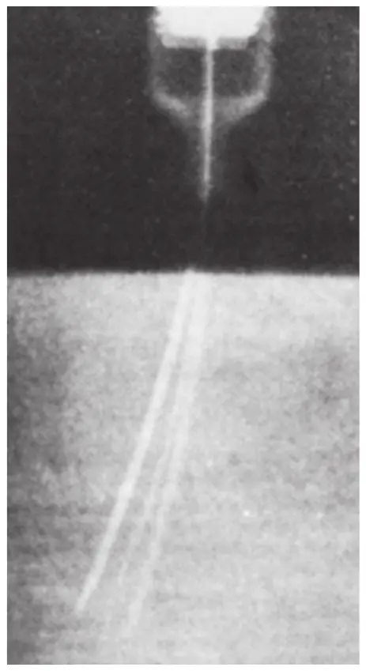
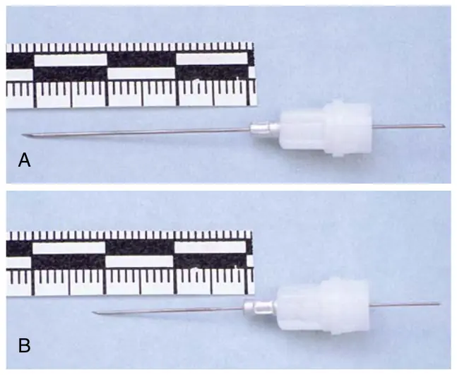

نسخه استخراجشده؛ ترجمه یا تأیید علمی انجام نشده است. وضعیت: captured
دانشجویی برای بلاک عصب آلوئولار تحتانی (IANB) مردی ۴۵ ساله سوزن کوتاه گیج ۳۰ برداشته و میگوید: «باریکترین سوزن کمدردترین است.» بیمار هم همین را خواسته. این انتخاب درست است؟

هر سوزن دندانپزشکی چهار بخش دارد: بول یا نوک برنده، تنه (shaft)، هاب که سوزن را به سرنگ وصل میکند، و سر پشتی که دیافراگم کارپول را سوراخ میکند و سر کُندش درون کارپول میماند.
گیج قطر داخلی سوزن است: هرچه عدد گیج بزرگتر، سوزن باریکتر. گیج ۳۰ از گیج ۲۵ باریکتر است. در کد رنگی رایج، گیج ۲۵ قرمز، ۲۷ زرد و ۳۰ آبی است.
بیمار میان گیجهای ۲۳ تا ۳۰ فرقی حس نمیکند؛ پس سوزن باریکتر کمدردتر نیست. در عوض سوزن پهنتر (گیج ۲۵ یا ۲۷) این برتریها را دارد:
برای تزریقهایی که خطر آسپیراسیون مثبت در آنها بالاست، مثل IANB، PSA و بلاک منتال و اینسیزیو، گیج ۲۵ ارجح است و گیج ۲۷ پذیرفتنی. گیج ۲۷ برای بقیهی تزریقها مناسب است، وقتی آسپیراسیون مثبت کم و عمق نفوذ زیاد نیست. گیج ۳۰ برای هیچ تزریقی توصیهی ویژه ندارد؛ حداکثر برای اینفیلتراسیون موضعی جهت هموستاز در کار پریو.
هر تزریقی که حدود ۲۰ میلیمتر یا بیشتر بافت نرم را رد میکند سوزن بلند میخواهد: IANB، گاو-گیتس، واَزیرانی-آکینوسی، اینفرااوربیتال و بلاک ماگزیلاری. برای بقیه، مثل اینفیلتراسیون، PSA، MSA، کام و PDL، سوزن کوتاه کافی است. در کودک سوزن کوتاه روال است تا وقتی آناتومی خود بیمار سوزن بلند بخواهد.

ست پایهی مطب را سوزن بلند و کوتاه گیج ۲۷ بدان. سوزن را تا هاب در بافت فرو نبر، مگر موفقیت تزریق واقعاً به آن وابسته باشد.
نوک سوزن معمولی در لبهی تنه است، نه در مرکز آن؛ برای همین سوزن هنگام پیشروی در بافت به سمت مخالف بول منحرف میشود. اگر بول رو به بالا باشد، سوزن به پایین میرود. هرچه سوزن بلندتر، باریکتر و زاویهی بول بیشتر باشد، انحراف بیشتر است.
نکتهی طلایی: چرخاندن رفتوبرگشتی سوزن هنگام پیشروی (BRIT) انحراف را تقریباً از میان میبرد و نیروی لازم برای پیشروی را هم کم میکند. سرنگ معمولی که با کف دست و شست گرفته میشود این چرخش را اجازه نمیدهد؛ دستهی قلممانند سیستم کامپیوتری (C-CLAD) اجازه میدهد.